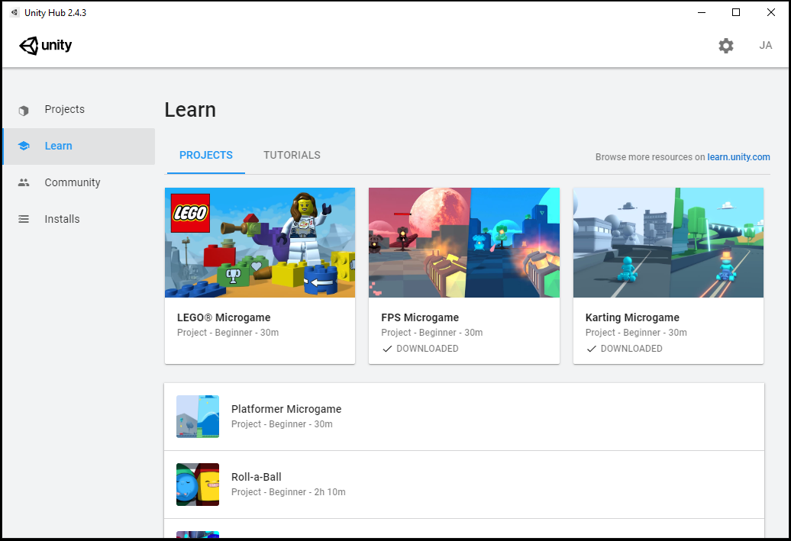
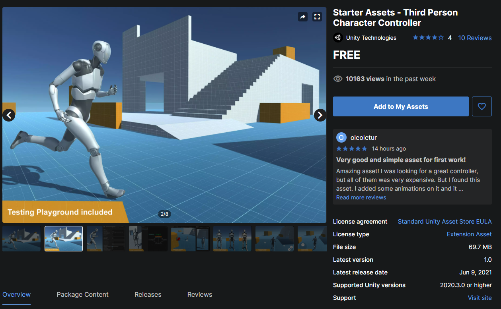
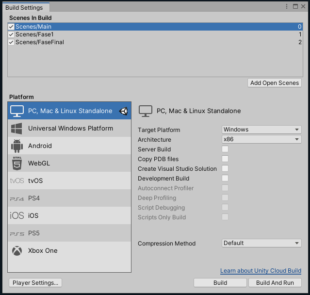

Sempre que nos vamos desenvolver algo nos precisamos de um começo e um fim, mas às vezes é meio difícil saber por onde começar ou ate mesmo ter uma ideia para se basear, por este motivo nos mostraremos nessa parte do blog onde você pode pegar uma base para onde começar com os micro jogos e assets gratuitos da Unity learn, como utilizar e tirar proveito da Asset store e finalmente, como fazer a build de um projeto.
Microjogos e Asset Kits

Para começar, nos vamos explorar um pouco a seção de micro jogos e exatamente oque eles são. Com o laucher do Unity Hub aberto abra a aba "Learn", debaixo de Projects, aqui você vários projetos feitos com o intuito de ajudar a entender melhor como programar e como trabalhar na Unity. Aqui tem micro jogos, jogos pre-feitos onde você pode ver como é um jogo com mecânicas básicas já implementadas e como adicionar mais funcionalidades, sem falar dos kits com assets prontos para ser implementados, onde você só precisa criar códigos, criar as cenas e o próprio jogo em si, vale notar que todos esses assets providos pela Unity são gratuitos e criados com o intuito de ajudar na aprendizagem, mas para usa-los de forma comercial é preciso olhar seus termos de serviço individuais.Para adquirir um kit ou micro jogo e começar a desenvolver você só precisara selecionar um na aba Learn e apertar para baixar o projeto em "Download Project", depois a na aba de projetos e crie um novo, mas dessa vez, invés de escolher um template 2D ou 3D, escolha o do micro game que você baixou, se você escolheu um kit de assets você vai precisar apertar em abrir projeto na aba Learn ou importa-los dentro de um projeto vazio, para importar um desses kits, assets ou ferramentas que você tenha adquirido você vai precisar abrir o Package Manager em [Window > Package Manager] e pesquisar pelo oque você precisa.
A Asset Store
Um dos recursos mais populares da Unity é a Asset Store, um mercado onde usuários podem comprar e vender assets, uma ferramenta que é muito útil para equipes ou pessoas que buscam recursos os quais eles não têm habilidade para reproduzir ou também é muito usada para criar protótipos rapidamente, aumentando ate a produtividade de um projeto.

Para utilizar essa ferramenta nos precisamos acessar o site Asset Store, aqui nos podemos visualizar todos os assets disponíveis como assets em geral, ferramentas e outros. Podemos-nos começar a entender a Asset store um pouco melhor procurando alguns assets gratuitos, apertando na aba "Assets" e depois em "2D", na parte direita navegue ate a seleção de preços e selecione "Free assets", você pode também selecionar a opção de 3D para visualizar mais assets de outras categorias, agora vamos selecionar um asset para visualizar melhor, eu escolhi o novo Controller de terceira pessoa feito pela própria Unity Technologies, aqui nos podemos visualizar o preço, licença, tamanho do arquivo e o conteúdo desse package. Para adicionar um asset, você precisa apenas pressionar "Add to My Assets" ou "Buy Now"(caso seja pago) e concordar com a licença, apos isso ele já estará disponível para ser usado no editor.Os assets inclusos no packge selecionado incluem tanto modelos e animações quanto scripts, usando esse asset da para facilmente criar um protótipo de um jogo, facilitando o desenvolvimento e para visualizar todos os assets que você possui, basta apenas acessar a aba "My assets", nela você pode abrir os assets no editor rapidamente ao pressionar a opção "Open in Unity" em cada asset.
Build: Compilando um projeto

Para finalizar um projeto e poder realmente jogar o produto final nos precisamos fazer uma build, uma compilação do projeto para rodar em algum tipo de arquitetura, esses sendo as plataformas de computador ou telefone como o Windows, Mac, Linux e Android. Para fazer a build de um projeto nos precisamos primeiro abri-lo e escolher quais cenas serão incluídas na build, para acessar o menu de build abra o editor e selecione a aba "File", depois a opção "Build settings"[File > Build Settings], nessa janela você vai poder escolher quais senas cenas serão incluídas ao apertar o botão "Add Open Scenes" que ira adicionar a atual cena aberta, logo abaixo você pode escolher para qual plataforma o projeto será desenvolvido e compilado.Apos você adicionar todas as cenas e a plataforma desejada, aperte em build, escolha em qual pasta será salva a build e em alguns minutos, Voila! O seu projeto foi compilado em uma pasta como um arquivo executável.
O Fim
Este é o fim desse blog, mas não o fim da jornada, tudo oque você viu aqui deve ter lhe ajudado a compreender melhor como desenvolver na Unity e se você se interessou pela plataforma eu recomendo se aprofundar mais, pois a Unity não é apenas uma ferramenta potente mas também um comunidade muito forte.
Se você se inteiriçou por este site eu te recomendo dar uma olhada no nosso perfil do Github Brother_Boris, em breve alguns projetos sobre C# e IA feitos pelo mesmo autor apareceram por lá. Obrigado pela visita!